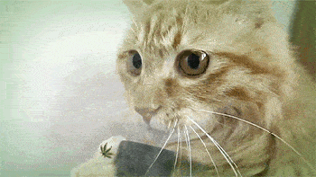
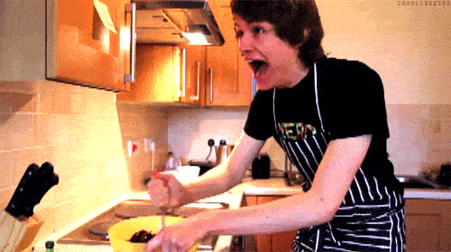
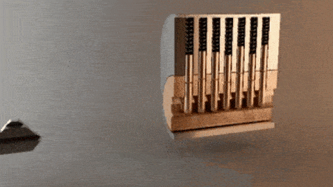
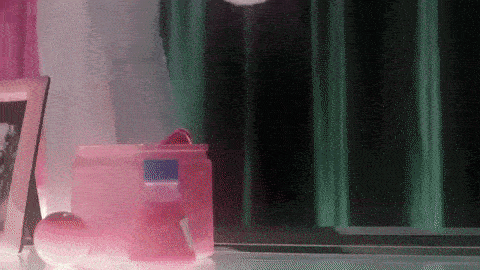

DIY
#Bongs#

The anatomy of a conventional bong is *very* simple. It consists of a bowl (and screen), a stem (sometimes optional), a
chamber, some liquid, and an opening for the mouth(s).
| | <---"mouthpiece"
/ \
/ \
/ \
chamber---> | |
| | \ / <---bowl
"carb"---> O | //
| |// <---stem
| /
| /
| |
| |
\_____/
The crude diagram above shows a generic bong. Water fills the container and stem just up to the carb. The water level should
really be at least an inch below the "carb" so that when the bong is tilted the water won't leak. The job of the carb is to
regulate where the air will be supplied from. If covered, the air (smoke) will come from the bowl; if uncovered, air will rush
through the carb and force out the smoke remaining in the chamber. A bong merely forces the smoke to bubble up through water,
thereby filtering it. Every bong works with this principle.
Bongs have a special advantage. A stoner can control the burning by using the flat side of a lighter to extinguish the bowl
after taking a hit. The practice of extinguishing the bowl can save a lot of pot in the long run. A bong burns a smaller
surface area of bud than a joint does. It's easy to notice that a joint lets loose a steady stream of smoke into the atmosphere
when it's being passed around, while a bowl tends to smother the embers underneath ash and unburnt bud. Stoners may notice that
a stalled bong will release a very thin stream of smoke compared to a burning joint. Moreover, bongs pull all the smoke into
the chamber while joints still waste smoke even while being toked.
When planning a bong, one should aim for specific goals.
You can always make a simple, effective bong in a couple of minutes with a plastic container, a stem and bowl, and some
silicone. Cut a hole about midway up the container (allow for the stem's angle), and shove in the stem. Seal it up with
generous amounts of silicone and let dry. Poke a small hole on the side opposite the stem (about 1/4", below the level of the
bowl) for the carb. There. You're done. The silicone makes an airtight seal, so you don't waste lung power.
While there's a wide variety of containers and materials you can use in making a bong, make sure they will be safe. PVC is out,
as the heat of the smoke reacts with the plastic, releasing small amounts of carcinogens. When deciding whether to use a
certain kind of plastic or not, the rule of thumb is to make sure it's safe for food. If it's meant to store food, it's okay.
Otherwise, don't risk it. Plastic tubing is fine. Glass is optimal because it's inert. The best materials to use are chemistry
supplies. After all, they are designed to be airtight, to withstand high temperatures, etc. Therefore, they're safe to use and
they give the best hits. Metals are fine to use, too. I've seen stems and bowls made from aluminum, copper, and brass. Stay
away from any metal which could leach into the water, and especially stay away from lead.
#PCP(Angel Dust)#
*The following formulas A, B and C
tells you how to make PCP. Formula D is for a related compound with similar effects.
The substances give an eufforic effect by an oral dosage of 5 to 10mg.
The formulas produce the free base of the compounds, but for human use
the salt is preferred. To convert the free base to its corresponding salt
just dissolve it in isopropanolic hydrogenchloride and precipitate the
salt by addition of ether. Another way is to dissolve the free base in
ether and adding an excess of hydrogenchloride to precipitate the salt.
The 1-(1-phenylcyclohexyl)piperidine hydrogenchloride salt melts at 243-
244 degrees C. The hydrogenchloride salt of formula D melts at 236-
237 degrees C.*
Formula A
A solution containing one mole of magnesium bromide etherate
(prepared by reacting 25g of magnesium with 188g of ethylenedibromide
in 400ml of ether) is added to a solution of phenyl lithium prepared
from 13.9g of lithium and 160g of bromobenzene in 500ml of anhydrous
ether. The resulting mixture is refluxed with stirring for several
hours and then a solution of 154g of 1-(1-piperidino)-cyclohexane-
carbonitrile in 500ml of dry ether added. The reaction mixture is
refluxed and stirred for 18 hours and then treated with sufficient
satureded ammoniumchloride solution to just produce a clear ether
layer. After filtration of the solids the ether is distilled and
the residual 1-(1-phenylcyclohexyl)piperidine so obtained
distilled in vacou; b.p 109 degrees at 0.25mm. On rubbing and
stirring the oily distillate the product crystallizes. After
recrystallization from ligroin the PCP melts at 45-46 degrees.
Formula B
A mixture consisting of 170g of piperidine, 220g of cyclohexanone
and 750ml of benzene is subjected to azeotropic distillation until
the the evolution of water ceases. The solution is subjected to vacuum
distillation to obtain the desired N-(1-cyclohexenyl)piperidine; b.p.
105 degrees at 8mm.
190g of p-toluenesulfonic acid monohydrate is suspended in 250ml toluene
and the mixture heated under a water trap until all the water has been
removed. 165g of N-(1-cyclohexenyl)piperidine in 500ml of ether is added
to the toluene solution of p-toluenesulfonic acid at about 0-5 degrees.
A solution of approximately one mole of phenyl magnesium bromide
(prepared from 157g of bromobenzene and 24g of magnesium) in 750ml
of ether is added to the slurry of the tosylate salt of N-(1-cyclohexenyl)-
piperidine with stirring at about 5 degrees. The reaction mixture is stirred
for 30 minutes after the addition has been completed and decomposed by the
addition of an excess of saturated ammonium chloride and koncentrated
ammonium hydroxide. The ether layer is removed, dried over potassium
carbonate and the ether destilled. Distillation of the residue in vacuo
yields the desired 1-(1-phenylcyclohexyl)piperidine; b.p. 135-137 degrees
at 1mm; m.p. 46-46.5 degrees.
Formula C
59g of magnesium is added to 230g of 1,5-dibromopentane in 2 liters of
ether and the mixture stirred and refluxed for three hours. 151g of
N-benzoylpiperidine is added to the solution of pentamethylene-bis-
magnesiumbromide and the ether removed by distillation untill the
temperature in the reaction vessel reaches about 83 degrees C. The
reaction mixture is stirred at this temperature for sixteen hours,
cooled and then treated with sufficient ammoniumhydroxide and sauterated
ammoniumchloride to dissolve all the precipitate. The solution is diluted
with 2 liters of ether and the ether layer removed by decantation.
The ether layer is washed, dried over sodiumhydroxide and then the
ether distilled. The residue is distilled in vacuo to obtain the
desired 1-(1-phenylcyclohexyl)piperidine; bp 128-134 degrees C. at
0.8mm Hg.
Formula D
A mixture consisting of 100g of anhydrous ethylamine and 220g of
cyclohexanone is allowed to stand for 16 hours. The reaction mixture
is shaken thoroughly with solid potassiumhydroxide and the oil layer
removed by decantation. Distillation of the oil layer in vacou yields
the desired N-cyclohexylidene ethylamine; bp 68-75 degrees C. at 22mm Hg.
A solution of phenyllithium prepared from 11.2g of lithium and 76ml of
bromobenzene in 500ml of ether is added dropwise at 0 degrees C. to
a solution of 51g of N-cyclohexylidene ethylamine in 500ml of ether.
After the addition has been completed, the reaction mixture is stirred
for one hour and then decomposed by the addition of water. The ether
layer is removed, washed with water and dried. The ether is evaporated
and the residue distilled in vacuo to obtain the desired
(1-phenylcyclohexyl)-ethylamine; bp 104-108 degrees C. at 2.5mm Hg.
#Cannabis Cookbook#

*ACAPULCO GREEN*
3 RIPE AVACADOS
3 TABLESPOONS WINE
1/2 CUP CHOPPED ONIONS
2 TABLESPOONS CHILI POWDER
1/2 CUP CHOPPED GRASS
VINEGAR
Mix the vinegar, grass, and chili powder together and let the mixture stand for one hour. Then add avocados and onions and mash
all together. It can be served with tacos or as a dip.
*POT SOUP*
1 CAN CONDENSED BEEF
1/2 CAN WATER BROTH
3 TABLESPOONS CHOPPED WATERCRESS
3 TABLESPOONS GRASS
3 TABLESPOONS LEMON JUICE
Combine all ingredients in a saucepan and bring to a boil over medium heat. Place in refrigerator for two to three hours,
reheat, and serve.
*PORK AND BEANS AND POT*
1 LARGE CAN(1lb, 13oz) PORK AND BEANS
1/2 CUP LIGHT MOLASSES
1/2 TEASPOON HICKORY SALT
1/2 CUP GRASS
3 PINEAPPLE RINGS
4 SLICES BACON
Mix together in a casserole, cover top with pineapple and bacon, bake at 350 degrees for about 45 minutes. Serves about six.
*SPAGHETTI SAUCE*
1 CAN(6oz) TOMATO PASTE
1 CAN(6oz) WATER
1/2 CLOVE MINCED GARLIC
2 TABLESPOONS OLIVE OIL
1 BAY LEAF
1 PINCH THYME
1/2 CUP CHOPPED ONIONS
1/2 CUP CHOPPED GRASS
1/2 TEASPOON SALT
1 PINCH PEPPER
Mix in a large pot, cover and simmer with frequent stirring for two hours. Serve over spaghetti.
*BIRD STUFFING*
5 CUPS RYE BREAD CRUMBS
1/3 CUP CHOPPED ONIONS
2 TABLESPOONS POULTRY SEASONING
3 TABLESPOONS MELTED BUTTER
1/2 CUP EACH OF RASINS AND ALMONDS
1/2 CUP CHOPPED GRASS
1/2 CUP CELERY
2 TABLESPOONS RED WINE
Mix it all together, then stuff it in.
*POT BROWNIES*
1/2 CUP FLOUR
1 EGG (BEATEN)
3 TABLESPOONS SHORTENING
1 TABLESPOON WATER
1/2 CUP GRASS
2 TABLESPOONS HONEY PINCH OF SALT
1 SQUARE MELTED CHOCOLATE
1/4 TEASPOON BAKING POWDER
1 TEASPOON VANILLA
1/2 CUP SUGAR
1/2 CUP CHOPPED NUTS
2 TABLESPOONS CORN SYRUP
Sift flour, baking soda, and salt together. Mix shortening, sugar, honey, syrup, and egg. Then blend in chocolate and other
ingredients, mix well. Spread in an eight-inch pan and bake for 20 minutes at 350 degrees.
#Growing Pot#

*I urge everyone to inform themselves about the FACTS of marijuana and about the LIES of the "War on Drugs". Whether you
smoke or not you should know about the true detriments and benefits of marijuana. You should also know of the wide range
of uses of the hemp plant itself, for medicine, paper, clothing, "wood", and food. If you don't know the facts, FIND OUT
the facts by talking to a lot of smokers. They know. You can also search out marijuana-legalization groups. They know. With
your new knowledge comes responsibility. Pass on the truthful information to friends, co-workers, EVERYBODY. The more real
information people know about drugs, the less the NCB will be able to bash down doors, confiscate equipment, and deprive
people of a perfectly natural experience.*
Most seeds are fertile, but the best are from Mexico. Never throw your seeds away, for pot is a weedand can be grown almost
anywhere.
- First, soke your seeds overnight in clean, lukewarm water.
- Obtain a planter box. If this is not avaliable, a plastic dish tray about two inches deep will serve just as well.
- Fill the container with washed fine sand and shredded sphagnum moss. If this is not readily avliable, you can use regular
soil. The soil should be packed firmly, and watered well so that the excess water is allowed to run off.
- Dig furrows the full length of the container about one-half-inch deep. Now, you can sow your eeds. Do so every inch. Fill in
each furrow with a clear plastic sheet and place it in a warm location where there are atleast 6 hours of sunlight a day.
- The plants are on their own until they develop their first true leaves.
- Even if the material mentioned above is not avaliable almost the same degree of success can be accomplished by placing the
seeds on several layers of water-soaked paper towes. Now cover the seeds with a plastic sheet just as above, and expose to
sunlight.
- In about a week, signs of life should appear. Within two weeks, definite little leaves should be present. This is the time
to transplant.
- The soil should be similar to the original soil used in the germinating box. Make sure you pull up all other weeds in the
general area allowing your plant as much freedom of growth as possible.
- The original germinating box should be watered the day before you are going so as to make the move easier on the plants, and
cut root damage to a minimum. The plants shoud be placed in holes two or three inches, depending on the size of the plant.
- If there is a lack of sunlight, a small amount of tin foil around the plant can be very helpful for the first few days are
the most critical after the actual transplant.
- If the plants survice the shock, there should be no reason why they shouldn't grow into health, fully grown plants (which
means, in certain climates, fifteen to twenty feet high).
- Very little care is needed after this stage, with the exception of fertilization. For fertilizers, oe can use a soluble
nitrogen, nitrate of soda, sulfate of ammonia, or rotting garbage. Remember the round around your plants should be clear of
weeds, but strangely enough, insects and marijuana do no harm.
- When the plants are obviously ready to be cut, you must prepare a place for them to dry. The best dring is in the sun, but
if you live in the city, it could be embarrasing and dangerous to have five o ten fifteen-foot marajuana trees hanging out of
your fire escape. In this case, a sun lamp may be ued. When using the sun, drying usually takes about two weeks. With a sun
lamp,the pot is ready after ony three or four days. When drying is done, take the leaves and crush them. This will be used as
smoke, and you know the story from there.
#.22 Out Of A Pen#
-Materials-
A ball point pen - approximately 5.3 Inches long (metal).
A strong spring - approximately 1.59 Inches long (able to fit inside 2nd half and a little bit of the first).
A strong metal bar - approximately 2.5 Inches long (able to fit inside the pen).
A strong small metal bar (a little bigger then the circumference of the spring and able to slide easily thru the 2nd half of the pen).
A few .22 Caliber bullets.
A soldering iron (optional).
-Construction-
First untwist the ball point pen and take out all the insides (you may break them to get them out because they are not needed
and should be discarded (see diag. A).
-The pen (diag. A)-
--------------------------
-< + :*]
--------------------------
^ ^
1St half 2nd half
< Denotes pen tip (where the ink comes out).
+ Denotes middle (separation point of pen).
*] Denotes push button.
Now take the metal bar (larger one) and attach it to the push button (see Diag. B).
-Firing pin (diag.B)-
--------------------*
^ ^
metal bar push button
You can attach it by either shoving the metal bar into the bottom or by soldering it in place (please note: I recommend
soldering the metal bar in place). Important - the metal bar must be attached in the exact middle of the push button (the metal
bar will act as a striking pin and must be in the exact center so it will strike the middle of the bullet causing the bullet to
go off).
With the metal bar now firmly attached to the push button, put the push button inside the pen like it should be (see diag. C).
-Firing pin placement (diag. C)
--------------------
-B-B-:-B-B-B-B-B-B-B-B-B-*]
--------------------
^
2nd half
-B- Denotes metal bar.
: Denotes middle (separation point of pen).
*] Denotes push button.
Now take the spring and slide it over the metal bar (see diag.D).
-Placement of spring (diag. D)
---------------------
-B-B-:BXXXXXXXXXXXXXXXXXXB*]
---------------------
^
2nd half
-B- Denotes metal bar.
: Denotes middle (separation point of pen).
*] Denotes push button.
X Denotes spring around metal bar.
Now with the spring around the metal bar and the push button where it should be, attach (by soldering or twisting, soldering
preferred) the small metal bar to the metal bar (see diag.E).
-Attachment of small metal bar (diag. E)
. -------------------
-B-B^B-:BXXXXXXXXXXXXXXXXB*]
' -------------------
-B- Denotes metal bar.
: Denotes middle (separation point of pen).
*] Denotes push button.
X Denotes spring around metal.
^ Denotes small metal bar attached to metal bar.
Note: it might also be helpful to solder the small metal bar to the spring along with soldering it to the metal bar.
-Test Of Firing Mechanism-
Pull back push button as far as it will go while holding onto the second half of the pen. Now let go and the metal bar (longer
one) should snap forward and then return to its approximate starting position.
-Finishing Up-
A .22 Caliber bullet should now be placed in the 1st half of the "pen" approximately 1 1/2 millimeters in front of where the
metal bar would be if the "pen" was put back together. Be sure to tape (or whatever you think will work) the bullet inside the
casing or else the bullet, if moved, might go off accidentally (see diag.F).
-Bullet placement (diag. F)-
---------------------------
< <* -B^B:BXXXXXXXXXXXB*]
---------------------------
^ ^
1St half 2nd half
-B- Denotes metal bar.
: Denotes middle (sepearation point of pen).
*] Denotes push button.
X Denotes spring around metal bar.
^ Denotes small metal bar attached to metal bar.
Pull back on push button as far as it will go, then let go - the bullet has just been fired (easy, right?). If you wish to
shoot another bullet, untwist the "pen", take out the shell and reload (see placement of bullet).
The bullet will tumble when shot instead of the spiraling because the inside of the 1st half (the barrel) has no lands or
grooves. Tumbling is good because the bullet will rip thru a target, but it does cause the bullet to be off target
approximately 3-4 inches. Having no lands or grooves makes the bullet hard to be traced back to its source (no striations). If
you wish to make lands and grooves, you can by taking a screw and twisting it inside the 1st half of the "pen" (adds striations
to bullet). I would also advise you to cut off the tip of the "pen". If the tip is left on, the bullet will still shoot, but it
will blow thru the tip and send pieces of the pen flying in different directions (also causing the bullet to be off target.)
#Break Into A House#
You Need:
Tear Gas or Mace
A BB/Pelet Gun
An Ice Pick
Thick Gloves
What You Do Is:
Call the ###-#### of the house, or ring doorbell, to find out if they're home.
If they're not home then...
Jump over the fence or walk through gate
If you see a dog give him the mace or tear gas.
Put the gloves on.
Shoot the BB gun slightly above the window locks.
Push the ice-pick through the hole (made by the BB gun).
Enter window.
Find the LIVING ROOM (they're neat things there!).
Then go to the Bedroom to get a pillow case. Put the goodies in the pillow case.
Get out
#Lock Picking#

Materials
First one will need strong metal,if possible clock spring steel to use to make the picks. I have used the flat part of a
regular butterknife, or one of those small screwdrivers. An allen wrench is good for a tension bar. You will also need
something to forge a piece of metal into a pick, like a grinder, sander, files or maybe even a metal cutter.
Types Of Picks
There are several types of lock picks, ranging from several shaped ends on the end of the pick. Only a few will be
discussed here because these few are the most common. The most valuable of picks is the Rake. The rake has a double curved
shape at the end, which places the pins were you want them. (See Figure 1) As you can see, the curves must be made like in
the diagram, and extremly rounded. Also needed is the Tension Bar. (Figure 2).
(Figure 1)
__1_cm___
/ __ \
/ \ __ \
________________________/ _ \/ \ | 1/2 cm
/ \__/\/ |
________________________/ /
(Figure 2)
___________4_in.___________
/ \
___________________________
|__________________________\ \
\| |
| | 1 inch
| |
| /
How To Pick A Lock
First thing to learn is that a common lock is made of a core (the center part that moves when you insert a key), and the
outside of the core, which stays stationary. A pin can be located in a hole drilled through the core, and outside of the
core, is a pin, there are usually 5 or 6 of these cylinders in a lock. There is a lower pin, an upper pin, and a spring, in
that order. Now, when the space between where the two pins meet should be at the space where the core meets the outside part
of the lock, when this happens the core will move freely. The space between the core and outer part is called the "shear
line". So, the purpose is to bring all the upper pins to the shear line, so they will remain there. After each of the upper
pins are there, just turn to unlock it. By the way, it's clockwise to unlock, counterclockwise to lock it back, if you want.
How do the upper pins stay up you ask? Well, remember those cylinders? They are not all drilled at the exact same place, so it
does not form a perfect line (it is imposible to drill them exactly right, they might be off by a fraction of a mm) Anyway,
when you have tension on there, the pins will get "caught" up there above the shear line, in no order. So tension has to stay
constant when picking. Not too much tension, but some. First place the tension bar in the lock, at the bottom, so the shorter
part of the tension bar is is vertical,and put tension on, and as the pins raise to the shear line, they move the core ever
so slightly, but you will notice, and all you have to do, is do it to all the pins, and you will open the lock. Don't push the
pins too far up, or they can get caught above the shear line. And be persistent, because it takes awhile to get the hang of it.
#Picric Acid From Aspirin#

Material Required
- Aspirin tablets (5 grains per tablet)
- Alcohol, 95% pure
- Sulfuric acid, concentrated, (if battery acid, boil until white fumes disappear)
- Potassium Nitrate (see elsewhere in this Cookbook)
- Water
- Paper towels
- Canning jar, 1 pint
- Rod (glass or wood)
- Glass containers
- Ceramic or glass dish
- Cup1
- Teaspoon
- Tablespoon
- Pan
- Heat source
- Tape
Procedure:
- Crush 20 aspirin tablets in a glass container. Add 1 teaspoon of water and work into a paste.
- Add approximately 1/3 to 1/2 cup of alcohol (100 millilitres) to the aspirin paste; stir while pouring.
- Filter the alcohol-aspirin solution through a paper towel into another glass container. Discard the solid left in the paper
towel.
- Pour the filtered solution into a glass or ceramic dish.
- Evaporate the alcohol and water from the solution by placing the dish into a pan of hot water. White powder will remain in
the dish after evaporation.
NOTE: The water in the pan should be at hot bath temperature, not boiling, approx. 160 to 180 degress farenheit. It should not
burn the hands.
- Pour 1/3 cup (80 millilitres) of concentrated sulfuric acid into a canning jar. Add the white powder to the sulfuric acid.
- Heat canning jar of sulfuric acid in a pan of simmering hot water bath for 15 minutes; then remove jar from the bath.
Solution will turn to a yellow-orange color.
- Add 3 level teaspoons (15 grams) of potassium nitrate in three portions to the yellow-orange solution; stir vigorously
during additions. Solution will turn red, then back to a yellow-orange color.
- Allow the solution to cool to ambient room temperature while stirring occasionally.
- Slowly pour the solution, while stirring, into 1-1/4 cup (300 millilitres) of cold water and allow to cool.
- Filter the solution through a paper towel into a glass container. Light yellow particles will collect on the paper towel.
- Wash the light yellow particles with 2 tablespoons (25 millilitres) of water. Discard the waste liquid in the container.
- Place articles in ceramic dish and set in a hot water bath, as in step 5, for 2 hours.
#Kill Thy Neighbor#
Preface
If you do indeed take the information provided in this article seriously enough to do it, please forget where you read it.
Diffenbachia (Dumbcane)
Take 2-4 of the leaves and boil them in water (don't inhale the fumes). When the water becomes a greenish color, take the
leaves and throw them away. Now take the liquid and add it to the victims drink, food etc. The victims voice goes kaput.
Oleander
Take a twig of this bush and grind it into a fine powder. Place the powder in the salt shaker, or substitute it for any other
type of seasoning. Causes death within 3-4 hours.
Poison Oak/Ivy
Take the leaves and do the above process, or boil the leaves and when the water turns brownish/green pour it out into a
vial. Add a few drops to the victims beverage. It tends to destroy the victims vocal cords.
Systemic Roses
Take a rose bush and soak the ground around it with a very poisonous fertilizer. In the days following the roses
leaves,stems,etc will become highly deadly. When the victim gets scratched by it. He/she dies.
Sodium Arsenide
This along with Lead Arsenide rank in the top ten of leathal materials. Sodium Arsenide can be aquired at a glass staining
shop. It is placed into the victims food, etc.
Potassium Cyanide
This chemical is contained in appleseeds. To get it you must grind up about 12 oz of apple seeds. The effect is close to
radiation poisoning. It kills within 6 hours.
Curare
This substance is basically a bad poison. It is various poisons combined into a leathal dosage. It kills within 45 minutes.
Lead
Although this material is very common it is also very deadly. Take about 30-40 grams of lead shavings(dust) and put them in
someones food. It does wonders.
Mercury
Mercury is a highly deadly material that kills skin on contact. To use most effectivly,place about 20 grams wherever the victim
might place his hand or any other part of his body for that matter, or place it in his food supply.
Carbon Monoxide (CO)
Drill a small hole into the exhaust system of the victims car. From it run a length of tubing into the passenger compartment.
After 20 minutes he will fall onto the floor and most probably die when he hits something.
The Chain Saw
Don a ski mask and follow your victim. When he stops and turns around. Give his limbs a vacation with your nifty poulan
chainsaw.
The Exploding House
Take one pound of plastique and a blasting cap. Hook the two wires of the blasting cap onto your victims telephone Box. Insert
the blasting cap into the plastique. Now place the plastique underneath the victims gas meter. Go to a pay phone and dial his
number. When the phone rings...